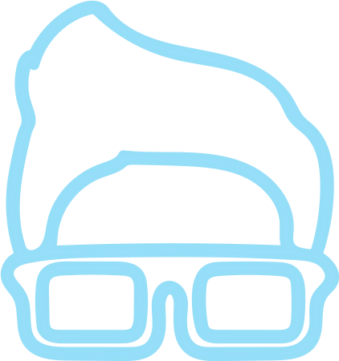

A Tech Society & Community
Founded at Bhagwan Parshuram Institute of Technology (2019)


A Tech Society & Community
Founded at Bhagwan Parshuram Institute of Technology (2019)
“Coding is today’s language of creativity. All our children deserve a chance to become creators instead of consumers of Computer Science.” – Maria Klawe #define was established on 4 September 2019 to help consumers become creators. Since then, the society has touched the lives of 400+ individuals through various events and helped them become successful programmers.At #define, we stand with thousands of students who wish to learn how to code, with those for whom learning is motivated by a fascination for new technologies, and with those who wish to speak code faster than their language.
We aim to lay the foundations of a tightly knit community that learns and grows together, and with all the people who have joined us, we are sure that we are not that far.